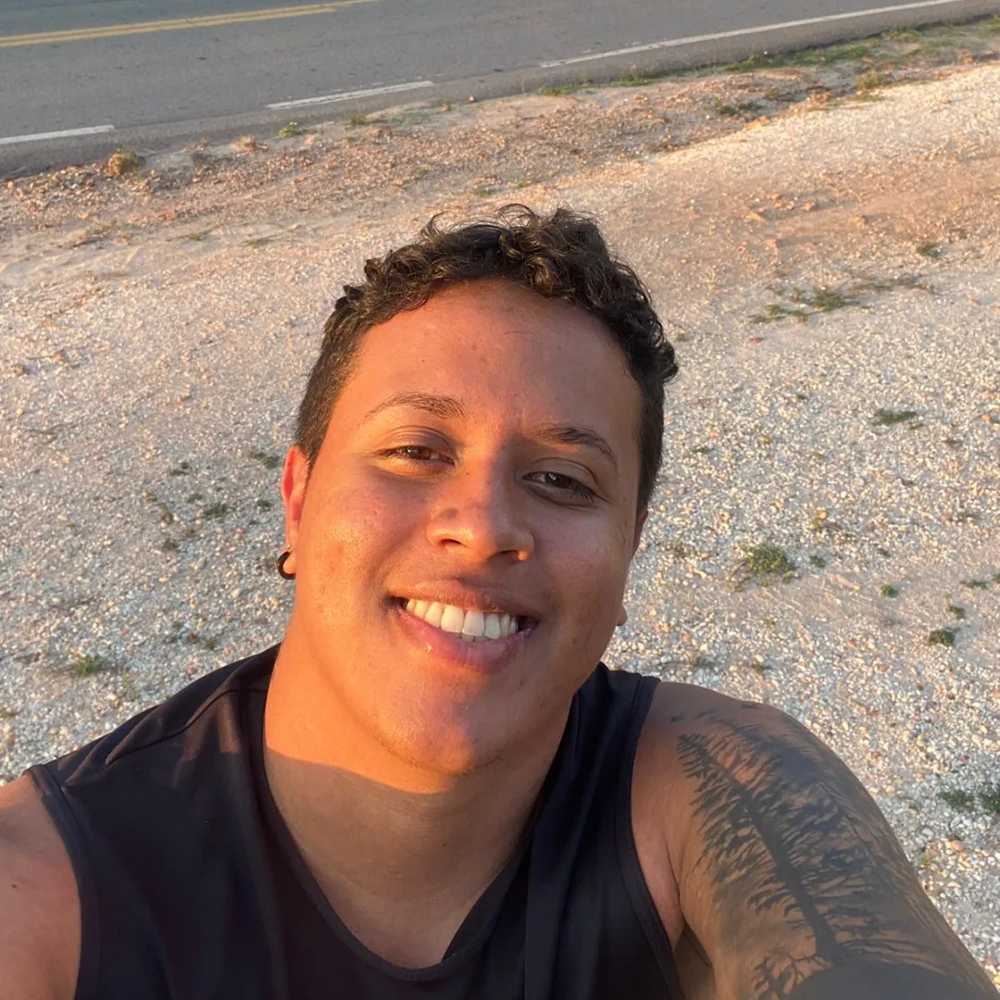

Biologist | MSc and PhD Candidate in Plant Biology
Professional Portfolio
Participation in the curation, maintenance, and expansion project of the CCAA Herbarium collection (UFMA), aiming to disseminate the flora of Maranhão and support teaching, research, and extension.
Project that seeks to understand the occupation of phenotypic and environmental space in ferns and lycophytes, using morphometric, spectral, and environmental data in a comparative phylogenetic context.
Worked as a PIBIC-UFMA fellow in the curation of vascular plants at the CCAA herbarium, with an emphasis on the taxonomy of ferns and lycophytes of the Cerrado.
Institution: Federal University of Pernambuco (UFPE)
Period: 2025 - Present
Title: Leaf dimorphism in ferns: a genomic, transcriptomic, and morpho-evolutionary perspective.
Institution: Federal University of Pernambuco (UFPE)
Period: 2023 - 2025
Title: Investigating species delimitation in Neotropical ferns: an integrative approach in Microgramma C.Presl (Polypodiaceae).
Institution: Federal University of Maranhão (UFMA)
Period: 2019 - 2022
Title: Ferns and lycophytes of protected areas in the eastern Maranhão Cerrado, Northeast, Brazil.
Institution: Federal University of Pernambuco (UFPE)
Period: 2025 - Present
CAPES scholarship holder with exclusive dedication.
Institution: Federal University of Pernambuco (UFPE)
Period: 2023 - 2025
CAPES scholarship holder with exclusive dedication.
Institution: Federal University of Maranhão (UFMA)
Period: 2021 - 2022
Tutor in Botany courses, such as "General Botany" and "Morphology and Taxonomy of Bryophytes and Seedless Vascular Plants".
Institution: Federal University of Maranhão (UFMA)
Period: 2020 - 2021
Worked on the curation of vascular plants at the CCAA herbarium, with activities of organization and herborization of botanical material.
UFMA (60h)
UFMA (60h)
IDPLANTAS (10h)
UFDPar (6h)
Achievement: A spectral approach for delimiting species complexes in ferns.
Institution: Federal University of Pernambuco / Graduate Program in Plant Biology
Year: 2024
All updated academic and professional information.